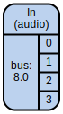
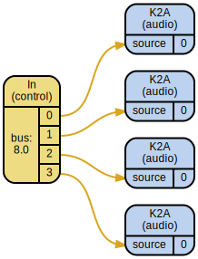
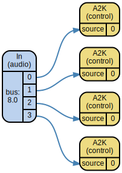

BusGroup¶
-
class
supriya.realtime.BusGroup.BusGroup(bus_count=1, calculation_rate=CalculationRate.CONTROL, *, bus_id=None)[source]¶ A bus group.
>>> server = supriya.Server.default().boot() >>> bus_group = supriya.BusGroup(bus_count=4) >>> bus_group <- BusGroup{4}: ??? (control)>
>>> bus_group.allocate() <+ BusGroup{4}: 0 (control)>
>>> bus_group[2] <+ Bus: 2 (control)>
>>> for i in range(len(bus_group)): ... bus = bus_group[i] ... value = (i * 0.2) + 0.1 ... bus.set(value) ... >>> bus_values = bus_group.get()
Values in
scsynthdon’t necessarily have the same precision as in Python, so we’ll round them here for display purposes:>>> print([round(value, 1) for value in bus_values]) [0.1, 0.3, 0.5, 0.7]
>>> print(bus_group) c0
>>> bus_group.free() <- BusGroup{4}: ??? (control)>
Attributes Summary
Test if a bus belongs to the bus group.
Get
itemin bus group.Return repr(self).
Gets map symbol representation of bus group.
Creates an audio-rate input ugen subgraph.
Fill buses in bus group with
value.Get bus group values.
Creates a control-rate input ugen subgraph.
Set bus group values.
Special methods
-
__contains__(item)[source]¶ Test if a bus belongs to the bus group.
>>> bus_group = supriya.BusGroup.control(4) >>> bus_group[0] in bus_group True
>>> bus = supriya.Bus.audio() >>> bus in bus_group False
-
__getitem__(item)[source]¶ Get
itemin bus group.>>> server = supriya.Server.default().boot() >>> bus_group = supriya.BusGroup.control(4).allocate() >>> bus_group[0] <+ Bus: 0 (control)>
>>> bus_group[1:] <+ BusGroup{3}: 1 (control)>
-
overridden
__str__()[source]¶ Gets map symbol representation of bus group.
>>> server = supriya.Server.default().boot() >>> control_bus_group = supriya.BusGroup.control(4).allocate() >>> audio_bus_group = supriya.BusGroup.audio(4).allocate()
>>> print(str(control_bus_group)) c0
>>> print(str(audio_bus_group)) a16
Methods
-
ar()[source]¶ Creates an audio-rate input ugen subgraph.
>>> import supriya.realtime >>> audio_bus_group = supriya.realtime.BusGroup( ... bus_id=8, bus_count=4, calculation_rate="audio" ... ) >>> ugen = audio_bus_group.ar() >>> supriya.graph(ugen)
>>> print(ugen) synthdef: name: 0af6b551a643cad01e9994845ff4ae40 ugens: - In.ar: bus: 8.0
>>> control_bus_group = supriya.realtime.BusGroup( ... bus_id=8, bus_count=4, calculation_rate="control" ... ) >>> ugen = control_bus_group.ar() >>> supriya.graph(ugen)
>>> print(ugen) synthdef: name: ecaa7fe9417cb0742cdcda87657fe9de ugens: - In.kr: bus: 8.0 - K2A.ar/0: source: In.kr[0] - K2A.ar/1: source: In.kr[1] - K2A.ar/2: source: In.kr[2] - K2A.ar/3: source: In.kr[3]
Returns ugen.
-
fill(value)[source]¶ Fill buses in bus group with
value.>>> server = supriya.Server.default().boot() >>> bus_group = supriya.BusGroup.control(4).allocate() >>> bus_group.get() (0.0, 0.0, 0.0, 0.0)
>>> bus_group.fill(0.5)
>>> bus_group.get() (0.5, 0.5, 0.5, 0.5)
>>> bus_group = supriya.BusGroup.audio(4) >>> bus_group.fill(0.5) Traceback (most recent call last): File "<stdin>", line 1, in <module> File "/Users/josiah/.virtualenvs/supriya/lib/python3.6/site-packages/supriya/realtime/BusGroup.py", line 316, in fill raise supriya.exceptions.BusNotAllocated supriya.exceptions.BusNotAllocated>>> bus_group.allocate().fill(0.5) Traceback (most recent call last): File "<stdin>", line 1, in <module> File "/Users/josiah/.virtualenvs/supriya/lib/python3.6/site-packages/supriya/realtime/BusGroup.py", line 318, in fill raise supriya.exceptions.IncompatibleRate supriya.exceptions.IncompatibleRate
-
get()[source]¶ Get bus group values.
>>> server = supriya.Server.default().boot() >>> bus_group = supriya.BusGroup().control(4).allocate() >>> bus_group.get() (0.0, 0.0, 0.0, 0.0)
-
kr()[source]¶ Creates a control-rate input ugen subgraph.
>>> import supriya.realtime >>> audio_bus_group = supriya.realtime.BusGroup( ... bus_id=8, bus_count=4, calculation_rate="audio" ... ) >>> ugen = audio_bus_group.kr() >>> supriya.graph(ugen)
>>> print(ugen) synthdef: name: ffeda833c370bc644251437469e243ef ugens: - In.ar: bus: 8.0 - A2K.kr/0: source: In.ar[0] - A2K.kr/1: source: In.ar[1] - A2K.kr/2: source: In.ar[2] - A2K.kr/3: source: In.ar[3]
>>> control_bus_group = supriya.realtime.BusGroup( ... bus_id=8, bus_count=4, calculation_rate="control" ... ) >>> ugen = control_bus_group.kr() >>> supriya.graph(ugen)

>>> print(ugen) synthdef: name: b64857a04b384841694ba85f74f0fd0b ugens: - In.kr: bus: 8.0
Returns ugen.
-
set(values)[source]¶ Set bus group values.
>>> server = supriya.Server.default().boot() >>> bus_group = supriya.BusGroup.control(4).allocate() >>> bus_group.get() (0.0, 0.0, 0.0, 0.0)
>>> bus_group.set((-0.5, 0.5, -0.5, 0.5)) >>> bus_group.get() (-0.5, 0.5, -0.5, 0.5)
Class & static methods
Read-only properties
-
bus_id¶
-
buses¶
-
calculation_rate¶
-
overridden
is_allocated¶
-
map_symbol¶
-
(ServerObject).server¶
-